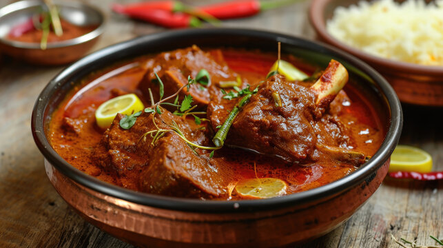

Delicious Recipes
Savor the Spice, Taste the Magic!

Ingredients:
- 2 medium-sized crabs (cleaned and cut into pieces)
- 2 medium onions (finely chopped)
- 2 medium tomatoes (finely chopped)
- 1 tablespoon ginger-garlic paste
- 1-2 green chilies (slit)
- 1 teaspoon turmeric powder
- 1 tablespoon red chili powder (adjust to taste)
- 1 tablespoon coriander powder
- 1 teaspoon cumin powder
- 1 teaspoon garam masala
- 1 cup coconut milk (or 1/2 cup grated coconut blended with water)
- 2 tablespoons cooking oil
- Salt to taste
- Fresh coriander leaves (for garnish)
- For Tempering (Optional):
- 1 teaspoon mustard seeds
- 1 teaspoon cumin seeds
- 2-3 dried red chilies
- A few curry leaves
How to Prepare:
- Prepare the Crab: Clean the crab thoroughly, removing the gills and any dirt. Cut it into pieces and wash again. Set aside.
- Marinate the Crab: In a bowl, mix the crab pieces with 1/2 teaspoon turmeric powder and a pinch of salt. Let it marinate for 15-20 minutes.
- Cook the Crab: Heat 1 tablespoon oil in a pan. Add the marinated crab pieces and sauté for 3-4 minutes until they turn slightly red. Remove and set aside.
- Prepare the Curry Base: In the same pan, add the remaining oil. If using tempering, add mustard seeds, cumin seeds, dried red chilies, and curry leaves. Let them splutter. Add the chopped onions and sauté until golden brown. Add the ginger-garlic paste and green chilies. Sauté for 2 minutes until the raw smell disappears.
- Add Spices: Add turmeric powder, red chili powder, coriander powder, and cumin powder. Mix well and cook for 1-2 minutes. Add the chopped tomatoes and cook until they turn soft and the oil separates from the mixture.
- Combine Crab and Curry: Add the sautéed crab pieces to the curry base. Mix well so the crab is coated with the spices. Add 1 cup of water (adjust as needed) and bring to a boil. Simmer for 10-12 minutes until the crab is fully cooked.
- Add Coconut Milk: Pour in the coconut milk and stir well. Let it simmer for another 5 minutes. Add garam masala and adjust salt if needed.
- Garnish and Serve: Garnish with fresh coriander leaves. Serve hot with steamed rice, roti, or naan.
Ingredients:
- 500 grams chicken (with bones, cut into pieces)
- 2 medium onions (finely chopped)
- 2 medium tomatoes (finely chopped)
- 1 tablespoon ginger-garlic paste
- 2-3 green chilies (slit)
- 1/2 cup grated coconut (fresh or dried)
- 1 tablespoon Malvani masala (or use a mix of 1 tsp red chili powder, 1/2 tsp coriander powder, 1/2 tsp cumin powder, 1/4 tsp turmeric powder, and 1/4 tsp garam masala)
- 1 teaspoon turmeric powder
- 1 teaspoon red chili powder (adjust to taste)
- 1 teaspoon coriander seeds
- 1 teaspoon cumin seeds
- 4-5 black peppercorns
- 2-3 cloves
- 1-inch cinnamon stick
- 2-3 dried red chilies
- 1/2 teaspoon mustard seeds
- 1/2 teaspoon fenugreek seeds (optional)
- A few curry leaves
- 2 tablespoons cooking oil
- Salt to taste
- Fresh coriander leaves (for garnish)
How to Prepare:
- Prepare the Malvani Masala: Dry roast coriander seeds, cumin seeds, black peppercorns, cloves, cinnamon, and dried red chilies in a pan until fragrant. Let it cool, then grind into a fine powder. Mix with grated coconut and a little water to form a smooth paste. Set aside.
- Marinate the Chicken: In a bowl, mix the chicken pieces with turmeric powder, red chili powder, and salt. Let it marinate for 20-30 minutes.
- Cook the Chicken: Heat oil in a pan. Add mustard seeds and fenugreek seeds (if using). Let them splutter. Add curry leaves and chopped onions. Sauté until the onions turn golden brown.
- Add Ginger-Garlic Paste and Green Chilies: Add ginger-garlic paste and green chilies. Sauté for 2 minutes until the raw smell disappears.
- Add Tomatoes: Add chopped tomatoes and cook until they turn soft and the oil separates.
- Add Malvani Masala Paste: Add the prepared Malvani masala paste and mix well. Cook for 2-3 minutes.
- Add Chicken: Add the marinated chicken pieces and mix well so they are coated with the masala. Cook for 5-7 minutes.
- Add Water and Simmer: Add 1 cup of water (adjust as needed) and bring to a boil. Reduce the heat, cover, and simmer for 20-25 minutes until the chicken is fully cooked and tender.
- Garnish and Serve: Garnish with fresh coriander leaves. Serve hot with steamed rice, bhakri, or roti.

Ingredients:
- 500g Mutton, cut into pieces
- 2 Onions, finely chopped
- 2 Tomatoes, pureed
- 1/2 cup Fresh Coconut, grated
- 1 tbsp Malvani Masala
- 1 tsp Red Chili Powder
- 1/2 tsp Turmeric Powder
- 1 tsp Coriander Powder
- 1/2 tsp Garam Masala
- 1 tbsp Ginger-Garlic Paste
- 2 tbsp Oil
- 1 tsp Mustard Seeds
- 8-10 Curry Leaves
- 1 tbsp Poppy Seeds (Khuskhus), soaked
- 1 tsp Cumin Seeds
- 2 Green Chilies, slit
- Salt to taste
- Water as required
- Fresh Coriander Leaves, chopped (for garnish)
How to Prepare:
- Heat oil in a deep pan and add mustard seeds, cumin seeds, and curry leaves. Let them splutter.
- Add finely chopped onions and sauté until golden brown.
- Mix in ginger-garlic paste and sauté until raw smell disappears.
- Add grated coconut and soaked poppy seeds, then roast until golden brown. Grind into a smooth paste.
- In the same pan, add tomato puree and cook until oil separates.
- Now add Malvani Masala, red chili powder, turmeric, coriander powder, and garam masala. Mix well.
- Add the cleaned mutton pieces and sauté for 5-7 minutes on medium heat.
- Pour in enough water, cover, and let it cook until the mutton turns tender (use a pressure cooker for faster cooking).
- Once cooked, check seasoning and simmer for a few more minutes to enhance the flavors.
- Garnish with fresh coriander leaves and serve hot with bhakri, rice, or chapati.